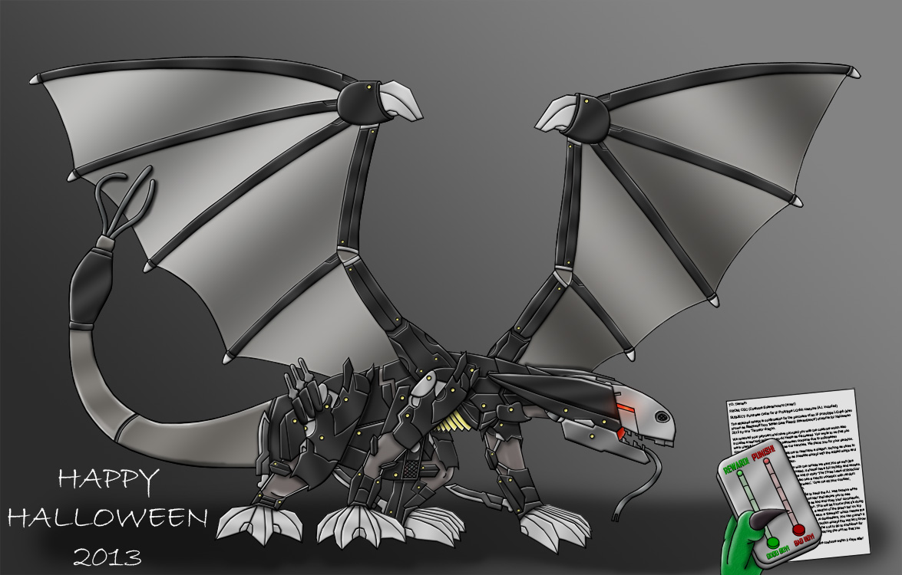

Build a Better Dragon
Written by TwistedSnakes
Illustrated by TheLonelyDragon

Crestor paced around his workshop. “Hmm, what if we did it like this…” He muttered to himself. “No, that wouldn’t work.” He picked up a model of a mecha from his workbench and adjusted its arms. “Ugh, that wouldn’t work either!”
He sat at the workbench, shuffling through the hundreds of pages scattered all over the tabletop, absentmindedly picking up the last cookie from the plate beside him. Wait... Last cookie? He pulled the plate closer to himself. He was a guy who was good with numbers, so this was something he’d definitely remember. He was certain there had been at least two cookies on the plate, and eight bits of crumbs. Yet, lo and behold, there were only six crumbs left. Someone had been snagging his cookies. And his crumbs too, for that matter. Suddenly, Crestor’s eyes brightened, almost as if an imaginary light bulb had just materialized over his head.
Tiemeth was watching that plate of cookies from the shadows. Well, plate of cookie. And crumbs. Delicious sweet biscuit of the gods. He stretched his tongue out to get it while trying to stay hidden in the shadows. Unfortunately, he was five meters away from the plate, and so he couldn’t reach it. What a tragedy, that a dragon should be unable to take the last cookie! Oh, wait, someone was picking up the plate. Some dragon with dark blue scales, but that wasn’t important.
Ahh! The plate was moving! It went out the workshop door and settled on the ground. Tiemeth, sticking to the shadows, bounded out of the workshop and hid behind a cluster of bushes conveniently planted close by. Tiemeth sniffed the air. Mmmmhhh… cookie. The other dragon came back! He was setting up a giant dragon-sized box over the cookie, propping it up with a stick. And he was going back into the workshop? Perfect. Tiemeth smiled. His mastermind plan to steal the cookie is would soon be put into action.
No sooner had Crestor entered the workshop than he heard the thump of his large cardboard box falling over. Four and a half seconds. That was fast! He went back to lift the box and found the last cookie missing, having been magically transmogrified into a green dragon who was licking the last of the crumbs from the now-empty plate.
“Well, well, well, look who we have here?” Castor smirked.
“It’s me!” came the reply from Tiemeth.
“Yeah I know it’s you, why did you think I set out this diabolical trap for you?”
“Well, I have a diabolical plan too!”
“Oh yeah? What’s that?”
“To eat the cookie. And as you can see, the plan succeeded.” He lifted his head smugly
Crestor had to restrain from smacking himself in the face with his paw. “Yes, yes, very good.” he encouraged, “but you know what would be great?”
“More cookies?”
“More cookies.”
“Sounds good to me.”
“Uh, yeah sure. Come into my workshop. There’s a ton of cookies.”
“Okay!”
Crestor led the unsuspecting green dragon into his workshop. “Okay, you wait here, and I’ll go get the cookies, alright?”
“Mhm,” Tiemeth piped up.
Crestor went back to the kitchen and began rummaging through his cupboards. Girl scout cookies lined the shelves. Thin mint. Samoas. Tagalongs! Savannah smiles, Thanks-A-Lots, Do-Si-Do’s! None of which he wanted to give to Tiemeth. Something suddenly caught his eye from behind the rows of boxes: there was a dusty, forgotten box that someone had given him for his birthday three years ago. “Sally’s Oatmeal Cookies” read the front of the box. They weren’t even girl scout cookies.
“Ugh,” he shuddered. “Oatmeal.” He blew a thick layer of dust off the box and opened the top, upturning it to slide the cookies onto a clean plate. At least they still smelled like cookies. Well, except for the slight scent of oats. Fine, at least they looked like cookies.
He gently lifted the plate of cookies, mentally counting them as he made his way to the workshop. Fourteen. Fourteen brown discs of pure evil. “I got the cooki-”
“Cookies!” Tiemeth interrupted, bounding over.
“Well, before you get the cookies, you need to listen to my monologue of expository explanations for what’s going to happen. I’m the villain of the story, after all, it’s what I’m supposed to do!”
“So long as I get the cookies after that.” Sulked the cookie-starved dragon.
“Fine. So I have this project, a tall order for a big client. They’ve commissioned me to make a mech- are you even listening to me?”
“Yes…? You said I’ll get cookies that are pretty tall orders.”
“No, I did not. Ugh, can you at least pretend to listen to me?”
“Okay!”
“So, for this project, I need to make a mecha dragon pet, one that trains itself with artif- ugh you’re distracted again. COOKIE!”
Tiemeth swung his head to the sound of the magic word, staring at Crestor with a tilted head.
“Okay, so it needs to be able to train itself with artificial intelligence, but all the robots I’ve built so far have been unable to learn fast enough. So that’s where -COOKIE- you come in. You’ll be the dragon inside the suit, and we can train you to follow orders. You got that?”
“Okay,” Tiemeth feigned attention at Crestor’s exposition.
“Fine, since you’ve been such a good listener, you get a cookie”
“COOKIE!”
Crestor sighed, and threw a cookie in Tiemeth’s direction, and he caught it in mid-air.
“Now if you want another cookie, you’ll have to get into this rubber suit for me.”
Tiemeth however, had other ideas. A rubber suit for one cookie? Nope, he wasn’t falling for that. “Two cookies,” he bargained.
“Wha-? Okay fine. Two cookies. Get in the suit.” He went to the corner of his workshop and pulled out a latex suit that was sitting in the corner, dotted with sensors on critical parts of the body. It used to be part of another project that he was working on, one that could monitor a dragon’s movements by measuring signals in its nervous system. Since that project had ended in a failure, he didn’t need it anymore. He helped Tiemeth into the suit, and the green dragon complied.
“Okay, two cookies please!”
Crestor picked up two more oatmeal cookies and threw them in Tiemeth’s direction. They flew to the left and right of Tiemeth, missing the dragon entirely. *SNAP SNAP* and the two cookies were gone before they even hit the floor.
“So, next I’ll need you to stand really still. You’re going to be putting on a… uhh, costume.” Perhaps he shouldn’t have been explaining to Tiemeth the true intent of his actions. No matter, the green dragon didn’t seem to suspect anything anyway. “I’ll give you two cookies.”
“Nuh-uh. Three cookies.”
“Okay, I got a better deal. You keep still, keep quiet, and I’ll give you FOUR half-cookies.”
“Four? Really?”
“Yeap.”
Crestor plodded to a canvas-covered heap in another corner. He grabbed the sheet and yanked it to the side with a flourish, revealing a gleaming mecha dragon standing stock-still. He was quite proud of the design, with the sleek metal parts that gave it a streamlined look which gave it the appearance of a dragon wearing a suit of futuristic armour. The individual plates took a long time to fit together, so it was a pity he was going to have to undo and redo all of that. Unscrewing things took too long. Instead, with a crowbar, he pried one of the metal plates off the mecha. It popped loose with a loud ‘PING!’, sailed across the workshop and flipped through the air before coming to rest on a pile of old spare tires.
“I’m bored,” Tiemeth complained. He had been trying to stretch out his tongue to reach the cookies again, only to be too far from the plate to actually grab anything.
“Uhh, you can have one cookie first. Help yourself.”
Success! Tiemeth happily skipped to the plate of cookies. He examined the cookies as he shifted them around with his paw. “Hmm, no chocolate chip cookies,” he lamented. But a reward is a reward. One cookie? Or was it one plate? Better be sure.
After Crestor pried the last of the of the armour off the mecha, he looked back at Tiemeth, who had happily went back to his position. Too happy, actually. His grin was at a five degree angle steeper. A glance at the plate confirmed his suspicions: all the cookies were gone. How was he going to keep the playful dragon still for the next part? He thought of the other cookies in the kitchen. Mmm mint. All his. He wasn’t about to give them away. Sure this project was important, but it wasn’t THIN MINT COOKIES important. He looked at the plate. Sixty-seven crumbs. Very good.
“Now, I’m going to help you into all these costume parts, but you need to keep still. If you can do that, I’ll give you not one, not five, but TEN cookie crumbs.”
“Ten? Really? What’s the catch?”
“No catch at all. Ten crumbs, for real.”
“Okay! What’s this for? A costume party?”
“Yes, yes, a costume party. Then I’m going to bring you to meet a, uh, a good friend! Yes, a good friend.”
“Okay!” Anything for cookies.
A few hours later, a tired Crestor wiped the sweat off his forehead. He had been mentally counting his cookie crumbs as he bribed Tiemeth to stay still, and he was down to the last three crumbs. Hopefully, he was done.
He looked at the metal-plated dragon standing in front of him. It was sniffing the air, swinging its wings around, looking for more cookies through the helmet’s red-tinted eyeholes. “Cookie?” Tiemeth quipped. Ugh, this isn’t very robotic-like, and he needed to make improvements if he was going to pass Tiemeth off as his creation.
Crestor opened his drawer, revealing a secret stash of toys he had been keeping there. Picking up a ball gag, and the rest of the crumbs, he went over to the curious dragon. “Open up, I got more crumbs~” he commanded in a sing-song voice. As Tiemeth opened his jaw, Crestor dropped the crumbs down and shoved the ball gag in. “Mff? CUH KEE?” He fitted a metal plate over the gag. “Sorry I didn’t quite catch you there,” he taunted, “Come again?” An unrecognizable, metallic mumbling came from the mouthpiece. Very good.
Now, he had to settle the organic movement of the dragon. He took a butt plug from the drawer and lifted up Tiemeth’s tail. He unzipped the opening at the back, nudging the tip of the plug against the green dragon’s tailhole. “MVRRR MVRRR MVRRR,” came the response. Ignoring him, Crestor continued working the plug in, until it slid into place where the sphincter gripped the neck of the plug. Patting it in place, he zipped the plug in. “MVRRR MVRRR,” came the response.
Crestor checked Tiemeth’s underside. As expected, he found Tiemeth’s rock hard cock protruding below. He picked up a metal cock tube and fitted it over the erect member. He then went back to the workbench and took apart the remotes for the vibrating plug and the cock tube. More engineering work to do, but he was almost finished. Letting the steel-clad Tiemeth stumble around the workshop, Crestor sat at the workbench, picked up the soldering iron and started work.
“Now, I know you can hear me, so I want you to pay attention. When I flick this switch, you’re going to feel some stimulation on your, uh…, yes. But if you want it to continue, you need to stay still.” Holding his newly-made remote, he turned the device on, and the Tiemeth could feel the thick plug vibrating in his tailhole, and his member being kneaded by the tube. He shuddered in pleasure, and suddenly the vibration stopped. Wait what? Oh yes, stay still. He stood still for a few seconds, and the vibrations came back on. Okay, need to stay still. Yes. Good.
“Hmm, wonder if this is convincing enough,” Crestor mused. Only one way to find out.
“So as you can see Mr Vultan, this robotic dragon is the perfect pet. It learns over time with its, uh, ‘learning optical neuro-AI’ system.” Crestor explained. He was in disguise, wearing a grey uniform, hiding under an ivy cap. He had used about thirty newly-invented technological buzzwords in the past fifteen minutes and was showing no sign of slowing down. The red dragon seemed to be staring intently at the mecha, almost as if he recognized it. However, overall he seemed to be buying it. Great.
“With this remote, I can give feedback to the AI on its actions. If I press this green ‘reward’ button, it feeds the signal through the ‘logical Pavlovian network’ in order to encourage that behaviour in future.” Thirty-one, he counted. “Let me demonstrate. Go fetch the newspaper!” he commanded.
Tiemeth moved stiffly over to Mr Vultan’s front door, where a roll of newspapers was sitting. The less he moved, the less he would be deprived of the stimulation was receiving. He picked it up with his maw, gingerly adjusting it to sit in front of the mouth plate, before walking awkwardly back.
“Now, this is good behaviour, so I’ll reward Tie-, I mean, the ‘IF Prototype LQ-84i’ unit. As the green button was pressed, the vibrations increased, and Tiemeth felt waves of pleasure as the cock tube stroked his member. “MVRRR MVRRR!” he moaned. He could imagine himself in sweet intercourse with a dragoness. So close to release. Come on!
“Okay, now I want it to do something more complex. Go get us a bottle of wine.” Tiemeth was too busy with his state of ecstasy to comply. Wine can wait. Cum first. “VRRRRR,” he growled.
“As you can see, the unit is disobeying my commands. So, I will now press the ‘punish’ button to train it not to do that. This time, the electronic spinal coordinator will improve its behaviour through simulating a negative response, something like how you’ll train a normal pet.” Thirty-two.
Tiemeth felt the effects of the punish button almost immediately. The tube clenched tightly at the base of his member, making it impossible for him to cum. But but but he was so close. “Mvr…” he whimpered, bending his head down in dejection.
“See? It’s giving in and submitting to you. To make it listen to you, I’ve added a third feature: the attention button. Watch this.” Crestor pressed the third button on the side labelled “Attention”.
A word suddenly rang through Tiemeth’s helmet. “Cookies”. He suddenly stood upright, head sniffing the air. There it was! The smell of flavours of chocolate, mint, butter and vanilla wafted through the helmet. Little did he know, these scents were simulated by the scent-generator Crestor had earlier installed into the helmet.
Tiemeth wanted the cookies! If there’s smoke, there’s fire. Likewise, if there’s the smell of cookies, then there just had to be cookies. Using his powers of logical deduction, he figured they must be in the kitchen. Ignoring all the obstacles in the way, he made a beeline for the kitchen, jumping and ripping up a plush couch, yanking curtains off their curtain rods, and knocking over a large oriental vase.
As the vase magically transformed into a million ceramic pieces on the carpet with a crash, the red dragon turned to stare angrily at Crestor. “Well uh, there might be some bugs in the algorithm. We can quickly shut this down.” He flicked the off switch, and Tiemeth’s suit went into lockdown mode.
Tiemeth felt the joints on the suit lock and saw that the visor fade to an opaque black. Darn it, he was so close. No cookies. Why was life so full of disappointments?
In the meantime, Crestor was slowly planning his escape. “I’ll go back and report this to Crestor. I’m actually just a delivery boy. I don’t know what’s going on haha.” he quickly paced to the door, and pulled the handle. “Crestor will settle all of this. But don’t contact him. Or look for him. He doesn’t want to be disturbed.” He slid himself out. “Oh and don’t try to open the mecha. It, uh, voids the warranty. Yeap yeap no more warranty. Okay BYE!”
Mr Vultan watch Crestor run down his driveway, out of the gate. He facepalmed and sighed. It’s not the first time Crestor had attempted this tomfoolery, and it certainly wouldn’t be the last. Why did he even commission projects from him anyway? And what was he going to do with Tiemeth?
He pressed a button on the desk, “Obsidian, could you come and take Tiemeth out of that ridiculous costume. Bring him to the labs, and I’ll figure something to do with him.” “Yes sir” came a voice from the speakers.
What a mess.
~ End ~